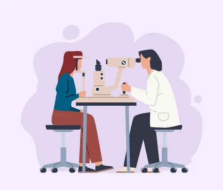

현재 우리나라는 65세 이상 인구 비율이 14% 이상인 ‘고령사회’로 빠른 속도로 초고령 사회에 진입 중이다. 노화는 눈 건강에 즉각적인 영향을 끼친다. 흔히 알려진 노안·백내장이 대표적인데 고령 인구가 증가하는 만큼 노인성 안질환 환자도 많아지는 추세다.
‘노화’와 관련되지 않은 안과 질환도 증가세다. 스마트기기·PC 사용의 일상화, 극심한 스트레스, 서구화된 식습관 등 눈을 혹사하는 환경적 요인이 많아졌기 때문으로 추정된다. 명심할 점은 망막·황반에 발생하는 질환은 어느 정도 진행하기까지 자각 증상이 없는 경우가 흔하고 치료 골든타임이 중요하다는 사실이다.
망막이 내벽에서 떨어져 분리되는 ‘망막박리’
망막박리는 망막이 안구 내벽에서 떨어져 분리되는 질환으로, 모든 연령대에서 발견된다. 미리 발견하면 레이저광응고술, 안구 내 가스 주입술, 유리체 절제술 등을 통해 망막을 재유착시켜 치료할 수 있다. 문제는 망막박리를 발견하지 못하고 넘어가는 경우다. 망막이 분리된 상태로 장기간 방치되면 시 기능이 떨어지면서 결국 실명에 이를 수 있다. 비문증, 광시증, 변형시, 색각장애 등의 증상을 동반하는데, 주변부터 박리가 진행되면 특별한 증상이 없어 더 주의해야 한다.
눈앞에 동그란 그림자, ‘중심장액성 맥락망막병증’
40~50대 이상 남성에게서 주로 발병되며, 어느 날 갑자기 눈앞에 동그란 동전 모양의 그림자가 시야를 가리면서 나타난다. 과로, 스트레스, 수면 부족 등과 연관이 있는 것으로 추정되지만 아직 발병 원인이 명확하게 밝혀진 바 없다. 초기에는 경과를 관찰하며 1~3개월 정도 자연 회복을 기대하고, 개선되지 않으면 약물치료나 레이저광응고술을 시행한다. 최초 발병 후 50%의 환자에서 재발하기 때문에 증상 완화 이후에도 경과를 지속해서 관찰해야 한다.
눈앞의 하얀 막, 흐려 보이는 ‘망막전막’
망막전막은 황반부 표면에 뿌옇게 막이 증식하면서 망막·황반이 제 기능을 잃게 되는 것을 의미한다. 시야가 흐려 보이고 사물이 휘어 보이는 증상이 나타난다. 초기에는 정기 관찰을 진행하고, 막이 증식하거나 악화 소견이 보이면 수술을 통해 막을 제거한다.
40세 이상은 1년에 1번 안과 검진받아야
망막질환은 한 번 발병하면 재발 우려가 있고 완치가 어렵다. 조기 발견해 지속해서 관찰하고 적절한 시기에 맞춤형 치료를 시행하는 게 관리 포인트다. 갑자기 눈앞에 지렁이·머리카락이 떠다니는 것 같은 비문증은 여러 망막질환을 알리는 신호다. 없던 비문증이 생겼거나 비문의 수가 갑자기 많아지면 즉시 안과를 찾아 검사를 받아보는 게 좋다. 대한안과학회에서는 만 40세 이상부터 안저 검사 등 정기적인 안과 검진을 권고한다.
이 칼럼은 ‘중앙일보 헬스미디어’ 2021년 8월 30일에 소개된 본원 송민혜 원장의 전문가 칼럼을 정리한 것입니다.